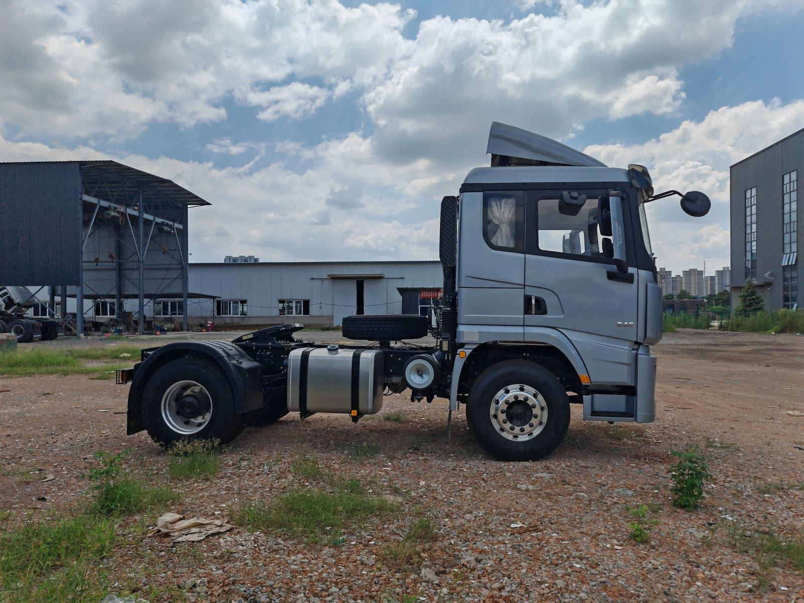
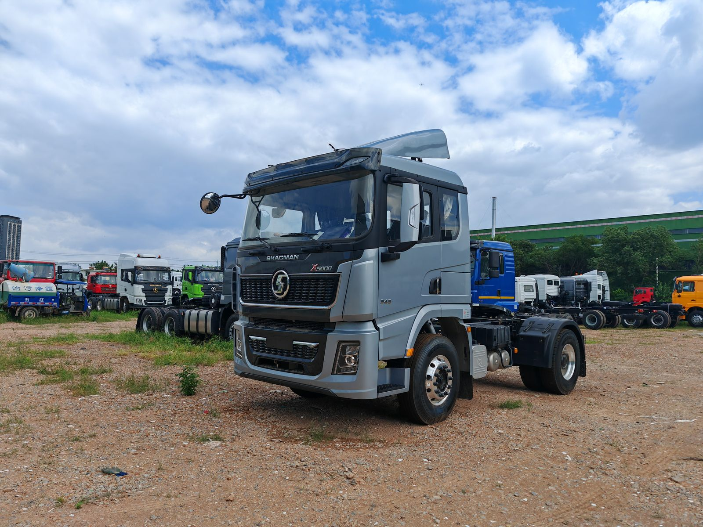

Highway-focused fleet work
A 4x2 tractor is commonly evaluated for paved-road and long-distance trailer operations where the buyer prioritizes maneuverability, highway duty and fleet fuel planning. It should not be selected only from horsepower.
Verified reference configuration
This page documents one reviewed SHACMAN X6000 4x2 tractor unit configuration for long-haul fleet procurement. It combines a 550 HP Weichai engine, FAST transmission, rear air suspension, large dual fuel tanks and a high-roof cab. The specification and photos come from supplied sales material; availability and destination suitability still require written confirmation.
Request Configuration Ask Andy
The values below were taken from the supplied bilingual configuration sheet. They describe one reference truck, not every X6000 4x2 offered for export.
| Chassis model | SX4188Y3381 |
|---|---|
| Drive and steering | 4x2, left-hand drive |
| Wheelbase | 3800 mm |
| Maximum speed listed | 90 km/h |
| Engine | Weichai WP13.550E501, 12.54 L, 550 HP |
| Emission standard | Euro V |
| Transmission | FAST SF16JZ260A; confirm the complete transmission and control specification in the final technical annex |
| Front axle | HANDE HD 7.3T |
| Rear axle | HANDE 13T HD single-reduction axle, ratio 3.364 |
| Clutch and steering | 430 mm diaphragm clutch; ZF-technology steering |
| Suspension | Front leaf spring and rear full air suspension |
| Fuel capacity listed | 980 L + 400 L aluminum-alloy tanks |
| Tires | 315/70R22.5, 6 + 1; aluminum-alloy wheels are listed |
| Braking equipment | Dual-circuit compressed-air service brake, spring parking brake and engine exhaust brake |
Specification control: confirm one complete chassis specification, current component availability and destination requirements before production. The source document also contains commercial information; those details are intentionally not published on this page.
A 4x2 tractor is commonly evaluated for paved-road and long-distance trailer operations where the buyer prioritizes maneuverability, highway duty and fleet fuel planning. It should not be selected only from horsepower.
Confirm trailer type, kingpin, coupling height, axle layout, cargo and target operating weight. The reviewed sheet lists an approximately 1150 mm saddle height, but the final interface must be checked against the selected trailer.
Provide daily distance, gradients, altitude, road surface, cruising speed, fuel access and service network. These inputs determine whether this reference configuration suits the intended operation.
The reviewed configuration lists an extended high-roof X6000 cab with a four-point air-suspension mounting. Driver equipment includes a ventilated and heated air seat, automatic climate control, multifunction steering wheel, cruise control, 7-inch instrument display and independent heater. It also lists a 360-degree camera system with a 10-inch display, 38 L dual-compartment refrigerator, USB and Type-C connections, 12 V and 24 V power connections, WABCO four-channel ABS with ASR, an aluminum-alloy air tank and a fire extinguisher.
Buyers should identify which cab features are essential and which are optional. The signed specification should state the exact cab, seat, climate, camera, refrigerator, electrical and safety equipment so inspection can verify the truck against the approved order.

State the trailer, cargo and target gross combination weight. Permitted weights depend on the completed combination and destination rules; the engine rating alone does not establish legal capacity.
Review the 550 HP engine, transmission, 3.364 rear-axle ratio and tire specification against gradients, cruise speed, start frequency and route conditions as one system.
The sheet lists 980 L and 400 L tanks. Confirm actual tank installation, usable capacity, route distance, refueling access and destination restrictions before approval.
The reference engine is listed as Euro V. The buyer must confirm whether this emission level and engine documentation are accepted for registration and operation in the destination market.
Request photos of the vehicle identity plate, engine label, transmission, axles, tires, fifth wheel, fuel tanks, cab equipment and dashboard, plus a signed specification comparison.
For multi-unit orders, record the approved engine, transmission, axle ratio, tires, fuel tanks, cab equipment, spare parts and inspection checklist to limit unwanted variation.
Review SHACMAN tractor selection factors across different models and operating duties.
SHACMAN tractor truck guideReturn to the broader model page for X6000 4x2 and 6x4 configuration context.
SHACMAN X6000 rangeUse the buying guide to organize specification confirmation, inspection and shipping requirements.
Truck export buying guideThe reviewed configuration sheet identifies model SX4188Y3381 with left-hand drive, a 3800 mm wheelbase, Weichai WP13.550E501 engine, 550 HP, Euro V emissions, FAST transmission, HANDE axles, rear air suspension and 315/70R22.5 tires. Final production details must be confirmed in the signed technical specification.
Provide the trailer type, cargo, target operating weight, route distance, gradients, road surface, daily mileage, destination country and port, quantity, steering requirement, emission requirement and inspection needs.
No. This page documents one reviewed reference configuration. Availability and destination suitability must be checked before the order specification is approved.
Send the trailer, cargo, route, destination, quantity and inspection requirements. Andy will confirm the available specification and prepare a private commercial proposal.